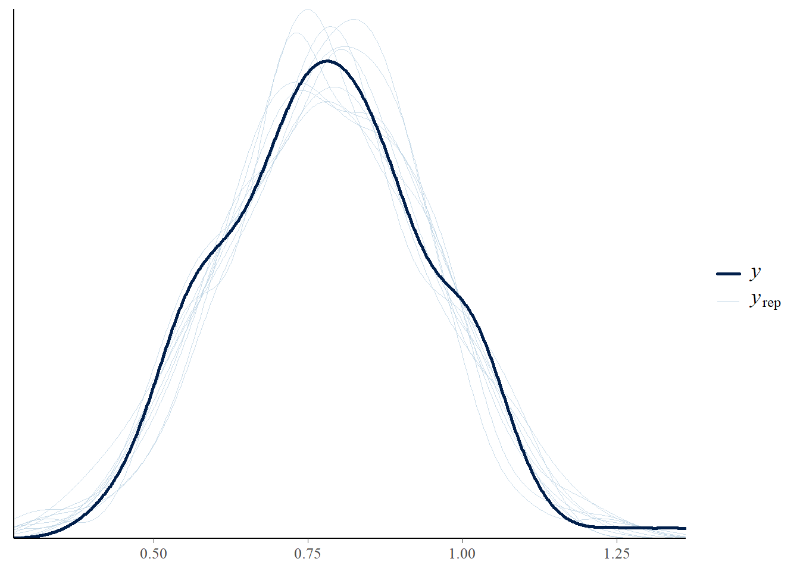

5 Bayeswatch! Logical Connections
5.1 Learnings
- Outcomes
– LO1: Explain the difference between Bayesian and frequentist concepts of statistical inference.
– LO2: Demonstrate how to specify and fit simple Bayesian models with appropriate attention to the role of the prior distribution and the data model.
– LO5: Engage in specifying, checking and interpreting Bayesian statistical analyses in practical problems using effective communication with health and medical investigators.
- Objectives
By the end of this week you should be able to:
– Understand Bayesian model and causality
– Explain the terms Estimand, Estimator & Estimate
– Understand the difference between Bayesian and classical Regression.
– Interpret a real-life problem in Bayesian context.
5.2 Causality and Bayesian Inference
A causal inference is a conclusion about a cause-and-effect relationship between two or more things. In simple terms, it’s answering the question: “Did X cause Y?” For example, if a study finds that people who drink more water tend to have better skin, causal inference would be the process of figuring out whether drinking water actually causes better skin or if that’s just a coincidence, or maybe due to some other factor (like diet or lifestyle). On the other hand, a correlation is when two things tend to happen together. It shows a relationship, but not necessarily a cause-and-effect one.
Let’s explore with another example. We might think, people who carry lighters are more likely to get lung cancer. This means that there is an association between carrying lighters and lung cancer, but it doesn’t imply that carrying a lighter causes lung cancer. Other factors, like smoking, could be the actual cause.
Now, when we conduct causal inference, we must first develop a causal model that is separate from a purely Bayesian (or statistical) model, because observational data by itself is not enough to establish causality. This idea is widely accepted across different philosophical traditions, even though interpretations of how to approach it can vary greatly.
The most cautious view holds that causation is fundamentally unprovable. We can take a slightly less conservative view, which holds that we are able to infer causation, but only under strict and carefully defined conditions, such as randomisation and experimental control. However, many scientific questions cannot be addressed experimentally due to feasibility constraints or ethical concerns.
In fields like health and medicine, we often introduce various control variables into a statistical model, observe changes in estimates, and construct a causal narrative. This approach assumes that only omitted variables can bias causal conclusions, yet even included variables can introduce confusion.
Even if we construct a causal model that appears to make accurate predictions, it may still misrepresent causation. If we rely on such a model to guide interventions, we risk producing unintended or misleading outcomes.
In this course, we will not discuss causal modelling in details, and for interested readers we refer books by Pearl, Glymour, and Jewell (2016) and Hernán and Robins (2025).
5.2.1 Estimand, Estimator & Estimate
Now, let us learn the terms estimand, estimator, and estimate. The estimand is the quantity of interest, i.e., the true value we seek to determine. We define an estimator as the method or procedure that we use to estimate the estimand. Finally, an estimate is the numerical result we obtain from applying a specific estimator to data.
Suppose, we want to find out the average effectiveness of a vaccine for a respiratory disease among children in Australia. Our estimand is “the true average vaccine effectiveness for this respiratory disease among all children in Australia.”
Since we can’t measure every child, we take a random sample of 10,000 children (say) and record how well the vaccine protects them from the disease. Using this data, we now need to choose an estimator, which is a method to estimate our estimand.
The simplest approach that we can take is to calculate the average vaccine effectiveness in our sample. In this case, the sample average acts as our estimator, providing an estimate of the true vaccine effectiveness. If our sample average shows 85% effectiveness, then 85% is our estimate based on the sample average estimator.
Now, in a Bayesian framework, the estimand remains the same, which is the true but unknown average vaccine effectiveness among all children in Australia. However, instead of just using the sample average calculated from the 10,000 respondents/children, our estimator in the Bayesian context is the posterior distribution of vaccine effectiveness. And we already know that this distribution is derived by combining prior knowledge with the likelihood of the observed data using Bayes theorem.
5.2.2 Bayesian Regression Context
Now, let us explain this in the context of Bayesian regression problem. Considering the example explained earlier, suppose we are interested in understanding how vaccine efficacy for a respiratory-related disease among children in Australia is influenced by certain predictors, such as age, pre-existing health conditions, and socioeconomic status. In this case, our estimand is the set of true regression coefficients that describe the relationship between these predictors and vaccine efficacy.
A perfect way to determine these coefficients would be to measure vaccine efficacy and collect all relevant predictor data (e.g., age, health conditions, and socioeconomic status) for every child in Australia and then fit a model to the entire population data. However, this is practically infeasible. Instead, we can estimate the regression coefficients using a sample observation, and as we have already mentioned, we can take a random sample of 10,000 children in Australia and collect data on their vaccine efficacy and the relevant predictors. Using this data, we fit a Bayesian model (e.g., a Bayesian linear regression model) to estimate the relationship between the predictors and vaccine efficacy.
In the Bayesian framework, we approach this problem by starting with a prior distribution for each regression coefficient, reflecting our prior beliefs about the relationships. For example, based on previous studies, we might believe that younger children have slightly lower vaccine efficacy and use this belief into the prior.
The sample data provides the likelihood, representing the probability of observing the data given different values of the regression coefficients. By applying Bayes theorem, we combine the prior with the likelihood to produce a posterior distribution for each regression coefficient. The posterior distributions represent our updated beliefs about the coefficients after observing the data.
For example, when considering the outcome variable on a continuous scale (i.e., without any transformation), if the posterior mean for the age coefficient is -0.5, it suggests that, on average, each additional year of age is associated with a 0.5 percentage point decrease in vaccine efficacy. Similarly, if the posterior mean for the socioeconomic status coefficient is 2.0, it suggests that higher socioeconomic status is associated with a 2 percentage point increase in vaccine efficacy.
Here, estimand is the true regression coefficients that describe the relationships between the predictors and vaccine efficacy. Estimator is the posterior distributions of the regression coefficients that we get based on the Bayesian model. These distributions summarise the uncertainty about the coefficients. And estimate is the specific value derived from the posterior distributions, such as the posterior mean, median, or mode for each coefficient.
This Bayesian approach allows us not only to estimate the coefficients but to quantify our uncertainty about them, providing a more comprehensive understanding of the predictor influences on vaccine efficacy.
5.3 Model Development - Gaussian Context
We have discussed about Directed Acyclic Graph (DAG) in one of our previous lectures. Today we will explain DAG for conceptualising and developing Bayesian regression models. It also helps to visually represent any potetntial causal relationships among variables and ensures proper adjustment for confounding factors.
Now we explain this more with an example related to Bone Mineral Density (BMD) measured in \(g/cm^2\). For example, we want to know, how does body mass index (BMI) impact bone mineral density (BMD)?
Here, we are trying to model the relationship between BMI (independent or exposure variable) and BMD (dependent or outcome or endpoint variable). Thus can draw the DAG as:
In a Bayesian context, we need to define the likelihood of observing the data given certain parameters and then combine that with a prior belief about those parameters.
5.3.1 Likelihood, Prior and Posterior
Let’s identify the likelihood and priors for the example:
BMD is modeled as a random variable that follows a normal distribution:
\[ \text{BMD} \sim N(\mu, \sigma^2) \]
This notation means that for each observed value of BMD, the values are assumed to come from a normal distribution with mean \(\mu\), which is the location of the distribution and variance \(\sigma^2\), which indicates the spread or uncertainty around the mean.
We can now model the mean of the BMD as a function of the exposure variable, BMI. That is, the mean \(\mu\) of BMD is determined by a linear relationship with BMI:
\[ \mu = \beta_0 + \beta_1 \cdot \text{BMI} \]
where, \(\beta_0\) is the intercept term, which is the expected BMD when BMI is zero, and \(\beta_1\) is the slope term, which indicates the change in BMD per unit change in BMI.
So, the likelihood function tells us how probable it is to observe the given BMD data, given specific values for the parameters \(\beta_0\), \(\beta_1\), and \(\sigma^2\).
Now, let’s define the prior distributions for the model parameters:
\[ \beta_0 \sim N(\mu_0, \sigma_0^2) \]
This states that \(\beta_0\) follows a normal distribution with mean \(\mu_0\) and variance \(\sigma_0^2\). The prior for \(\beta_0\) could represent our belief about the intercept term before observing the data. For instance, if we think that \(\beta_0\) (the baseline BMD when BMI is 0) should be close to 0, then we would choose \(\mu_0 = 0\), with some reasonable uncertainty \(\sigma_0^2\).
\[ \beta_1 \sim N(\mu_1, \sigma_1^2) \]
This states that \(\beta_1\), the effect of BMI on BMD, is also normally distributed with a mean of \(\mu_1\) and variance \(\sigma_1^2\). In this case, \(\mu_1\) reflects our prior belief about the effect of BMI on BMD, and \(\sigma_1^2\) reflects the uncertainty about that effect.
\[ \sigma^2 \sim \text{IG}(a, b) \]
This represents the prior belief about the variance of the error terms (the variability in BMD not explained by BMI). It is modeled using an Inverse Gamma distribution, which is a conjugate prior distribution and denoted as $ (a, b)$, where: \(a\) is a shape parameter, and \(b\) is a scale parameter.
The inverse gamma distribution is commonly used for modelling variance parameters because it is from a conjugate family and produces positive values and can model both large and small variances.
Once we have the likelihood (how the data are distributed given the parameters) and the priors (our initial beliefs about the parameters), we can easily get the posterior distribution and in this case, the posterior distribution for the parameters \(\beta_0\), \(\beta_1\), and \(\sigma^2\). This is proportional to:
\[ p(\beta_0, \beta_1, \sigma^2 | \text{BMD}, \text{BMI}) \propto p(\text{BMD} | \beta_0, \beta_1, \sigma^2) \cdot p(\beta_0) \cdot p(\beta_1) \cdot p(\sigma^2) \]
Given the joint posterior distribution, we can write the full conditional distributions for parameters \(\beta_0\), \(\beta_1\) and \(\sigma^2\) as:
\[ p(\beta_0 \mid \beta_1, \sigma^2, \text{BMD}, \text{BMI}) \propto N(\text{BMD} \mid \beta_0 + \beta_1 \cdot \text{BMI}, \sigma^2) \cdot N(\beta_0 \mid \mu_0, \sigma_0^2) \]
This is the product of a likelihood and a normal prior, so the conditional posterior is also normal:
\[ \beta_0 \mid \cdot \sim N(\mu_{\beta_0}^*, \sigma_{\beta_0}^{2*}) \]
Where:
\[ \sigma_{\beta_0}^{2*} = \left( \frac{n}{\sigma^2} + \frac{1}{\sigma_0^2} \right)^{-1}; \quad \mu_{\beta_0}^* = \sigma_{\beta_0}^{2*} \left( \frac{1}{\sigma^2} \sum_{i=1}^n (\text{BMD}_i - \beta_1 \text{BMI}_i) + \frac{\mu_0}{\sigma_0^2} \right) \]
Now, the conditional distribution for \(\beta_1\):
\[ p(\beta_1 \mid \beta_0, \sigma^2, \text{BMD}, \text{BMI}) \propto N(\text{BMD} \mid \beta_0 + \beta_1 \cdot \text{BMI}, \sigma^2) \cdot N(\beta_1 \mid \mu_1, \sigma_1^2) \]
Hence, the full conditional is normal:
\[ \beta_1 \mid \cdot \sim N(\mu_{\beta_1}^*, \sigma_{\beta_1}^{2*}) \]
Where:
\[ \sigma_{\beta_1}^{2*} = \left( \frac{\sum \text{BMI}_i^2}{\sigma^2} + \frac{1}{\sigma_1^2} \right)^{-1}; \quad \mu_{\beta_1}^* = \sigma_{\beta_1}^{2*} \left( \frac{1}{\sigma^2} \sum \text{BMI}_i (\text{BMD}_i - \beta_0) + \frac{\mu_1}{\sigma_1^2} \right) \]
Now, we can write the Conditional distribution for \(\sigma^2\) as:
\[ p(\sigma^2 \mid \beta_0, \beta_1, \text{BMD}, \text{BMI}) \propto N(\text{BMD} \mid \beta_0 + \beta_1 \cdot \text{BMI}, \sigma^2) \cdot \text{IG}(a, b) \]
Combining the likelihood (Gaussian) and Inverse Gamma prior, the full conditional is also Inverse Gamma:
\[ \sigma^2 \mid \cdot \sim \text{IG} \left(a + \frac{n}{2},\ b + \frac{1}{2} \sum_{i=1}^n (\text{BMD}_i - \beta_0 - \beta_1 \text{BMI}_i)^2 \right) \]
5.3.2 Bayesian DAG
By using these information in the above example, we write DAG for the Bayesian model as:
Now, let’s break down the concepts of estimand, estimator, and estimate using the Bayesian model represented by the DAG. In this example, the estimand is the quantity or parameter that we aim to estimate from the data, i.e., here the estimands are the parameters we want to infer, \(\beta_0\) (intercept), \(\beta_1\) (slope), and \(\sigma^2\) (variance). Now, estimator is the method we are using, i.e., the Bayesian model with MCMC method to get the posterior distributions of the parameters \(\beta_0\), \(\beta_1\), and \(\sigma^2\). In this Bayesian modelling framework, the estimates are the specific values derived from the posterior distributions of the parameters. For example, the mean or median of the posterior distribution of \(\beta_0\) could be an estimate of the intercept. Similarly, the mean or median of the posterior distribution of \(\beta_1\) could be an estimate of the slope.
5.4 Model-Baesd Results
5.4.1 Priors
We consider the following prior distributions for the model parameters. Say, we do not know any previous information at the baseline for BMD ( i.e., intercept). Suppose, we do not have any knowledge about the effect of BMI on BMD. Hence, we can consider \(\beta_0,\beta_1 \sim N(0, 10^2)\). Furthermore, let us assume the the variance parameter follows inverse-gamma distribution with hyper-parameters \(a=2\) and \(b=1\).
The prior structure we use follows a pattern of weakly informative priors. These help with regularisation by gently pulling parameter estimates toward zero, unless the data provide strong evidence for a large effect. This also helps avoid overestimating effects, a problem sometimes known as the winner’s curse.
Hence, following this structure, we can draw the prior distributions as follows:
Code
library(ggplot2)
library(tidyverse)
library(patchwork)
library(invgamma)
x_norm <- seq(-40, 40, length.out = 500)
normal_density <- dnorm(x_norm, mean = 0, sd = 10)
df_beta <- tibble(
x = x_norm,
density = normal_density
)
p1 <- ggplot(df_beta, aes(x, density)) +
geom_line(color = "steelblue", size = 1.2) +
labs(
title = expression("Prior for " ~ beta[0]),
x = expression(beta[0]),
y = "Density"
) +
theme_minimal()
p2 <- ggplot(df_beta, aes(x, density)) +
geom_line(color = "darkgreen", size = 1.2) +
labs(
title = expression("Prior for " ~ beta[1]),
x = expression(beta[1]),
y = "Density"
) +
theme_minimal()
x_sigma2 <- seq(0.001, 5, length.out = 500)
sigma2_density <- dinvgamma(x_sigma2, shape = 2, rate = 1)
df_sigma2 <- tibble(
x = x_sigma2,
density = sigma2_density
)
p3 <- ggplot(df_sigma2, aes(x, density)) +
geom_line(color = "firebrick", size = 1.2) +
labs(
title = expression("Prior for " ~ sigma^2),
x = expression(sigma^2),
y = "Density"
) +
theme_minimal()
# Combine all three plots
(p1 | p2 | p3) + plot_annotation(title = "Prior Distributions")
Now, we use these prior distributions to obtain the posterior distributions for the model parameters. We use R package “brms” to impliment the Bayesian model.
Note that not all R packages (such as ‘brms’) have the option to use the Inverse Gamma distribution directly in the R front-end function. We could avoid using Bayesian R packages and write individual Stan code to include the Inverse Gamma prior, but at this stage, that is beyond the scope of this course. Writing in Stan requires a strong understanding of mathematical coding, which may not be suitable for the general audience or students taking this course. Having said that, we encourage interested readers or students to stay in touch with the course coordinator for a deeper dive into writing core Stan code.
Now, a simple solution related to the issue of Inverse Gamma distribution is to use a distribution that approximates the Inverse Gamma distribution, where Student’s t-distribution can be a good candidate for such distribution. Let’s explain this with Inverse-Gamma distributions with parameters (2,1), i.e., \(\text{IG}(a=2, b=1)\) and Student-t distributions that approximates the Inverse Gamma with parameters \((\text{df}=3, \text{location}=0, \text{scale}=1)\), i.e., \(\text{Student-t}(3,0,1)\), where Degrees of Freedom = 3, location = 0 (centered), and Scale = 1. Hence, we can get the distribution plots as:
Code
library(ggplot2)
library(gridExtra)
ig_density <- function(alpha, beta, x) {
return(dgamma(1 / x, shape = alpha, rate = beta) / (x^2))
}
p1 <- ggplot(data.frame(x = seq(0.001, 20, length.out = 1000)), aes(x = x)) +
stat_function(fun = function(x) ig_density(2, 1, x), col = "red", lwd = 2) +
labs(y = "Density", x = expression(sigma),
title = "Inverse-Gamma(2, 1)") +
theme_minimal()
p2 <- ggplot(data.frame(x = seq(0.001, 20, length.out = 1000)), aes(x = x)) +
stat_function(fun = function(x) dt(x / 1, df = 3) / 1, col = "blue", lwd = 2) +
labs(y = "Density", x = expression(sigma),
title = "Student-t(3, 0, 1)") +
theme_minimal()
grid.arrange(p1, p2, ncol = 2)5.4.2 Posteriors
Hence, we run the model using ‘brms’ package and use one MCMC chain with 2000 iterations. Note that we can also use multiple MCMC chains for this. We can finally get the summary of the posterior distributions for the model parameters obtained from the Bayesian model as:
Code
library(brms)
library(tidyverse)
bmd_data <- read.csv("bmd_restricted.csv")
bmd_data$bmi <- bmd_data$weight_kg/(bmd_data$height_cm/100)^2
bmd_data <- tibble(
BMD = bmd_data$bmd,
BMI = bmd_data$bmi,
)
# model
bmd_model <- brm(
formula = BMD ~ BMI,
data = bmd_data,
family = gaussian(),
prior = c(
prior(normal(0, 100), class = "b", coef = "BMI"), # Slope priors
prior(normal(0, 100), class = "Intercept"), # Intercept prior
prior(student_t(3, 0, 1), class = "sigma") # Approximate Inv-Gamma(2,1)
),
iter = 2000,
chains = 1,
cores = 3,
seed = 123
)
SAMPLING FOR MODEL 'anon_model' NOW (CHAIN 1).
Chain 1:
Chain 1: Gradient evaluation took 3e-05 seconds
Chain 1: 1000 transitions using 10 leapfrog steps per transition would take 0.3 seconds.
Chain 1: Adjust your expectations accordingly!
Chain 1:
Chain 1:
Chain 1: Iteration: 1 / 2000 [ 0%] (Warmup)
Chain 1: Iteration: 200 / 2000 [ 10%] (Warmup)
Chain 1: Iteration: 400 / 2000 [ 20%] (Warmup)
Chain 1: Iteration: 600 / 2000 [ 30%] (Warmup)
Chain 1: Iteration: 800 / 2000 [ 40%] (Warmup)
Chain 1: Iteration: 1000 / 2000 [ 50%] (Warmup)
Chain 1: Iteration: 1001 / 2000 [ 50%] (Sampling)
Chain 1: Iteration: 1200 / 2000 [ 60%] (Sampling)
Chain 1: Iteration: 1400 / 2000 [ 70%] (Sampling)
Chain 1: Iteration: 1600 / 2000 [ 80%] (Sampling)
Chain 1: Iteration: 1800 / 2000 [ 90%] (Sampling)
Chain 1: Iteration: 2000 / 2000 [100%] (Sampling)
Chain 1:
Chain 1: Elapsed Time: 0.053 seconds (Warm-up)
Chain 1: 0.034 seconds (Sampling)
Chain 1: 0.087 seconds (Total)
Chain 1: Code
summary(bmd_model) Family: gaussian
Links: mu = identity; sigma = identity
Formula: BMD ~ BMI
Data: bmd_data (Number of observations: 169)
Draws: 1 chains, each with iter = 2000; warmup = 1000; thin = 1;
total post-warmup draws = 1000
Regression Coefficients:
Estimate Est.Error l-95% CI u-95% CI Rhat Bulk_ESS Tail_ESS
Intercept 0.42 0.07 0.28 0.55 1.00 1031 681
BMI 0.01 0.00 0.01 0.02 1.00 1044 582
Further Distributional Parameters:
Estimate Est.Error l-95% CI u-95% CI Rhat Bulk_ESS Tail_ESS
sigma 0.16 0.01 0.14 0.17 1.00 583 640
Draws were sampled using sampling(NUTS). For each parameter, Bulk_ESS
and Tail_ESS are effective sample size measures, and Rhat is the potential
scale reduction factor on split chains (at convergence, Rhat = 1).Code
#posterior_summary(bmd_model)
#plot(bmd_model)5.4.3 Results
The Bayesian model output indicates that the estimated intercept is 0.42, representing the expected BMD when BMI is zero—a value that isn’t realistic but is standard when interpreting linear models. The coefficient for BMI is 0.01, suggesting that for every one-unit increase in BMI, BMD increases by approximately 0.01 units on average. The 95% credible interval for this estimate ranges from 0.01 to 0.02, providing strong evidence that the effect of BMI on BMD is positive. The residual standard deviation (noise not explained by BMI) is estimated at 0.16 with a tight credible interval.
5.4.4 Diagnostics
We see that the convergence diagnostics are excellent, with Rhat values equal to 1.00, showing that the MCMC chains have mixed well. Additionally, the Bulk Effective Sample Size (Bulk_ESS) and Tail Effective Sample Size (Tail_ESS) are both comfortably above 500. ESS values should ideally be over 400–500 for each parameter. Lower ESS suggests that the model might need more iterations or better mixing. The results indicate that the posterior estimates are based on a sufficient number of effective samples and can be considered stable and reliable.
Below we provide the histogram and trace plots related to the posterior distributions of the model parameters. We also provide the autocorrelation plot and posterior predictive check based on the posterior distributions.
Code
plot(bmd_model)
Code
post_samples <- as.array(bmd_model)
#acf(post_samples[, , "b_Intercept"], main = "Autocorrelation: Intercept")
acf(post_samples[, , "b_BMI"], main = "Autocorrelation: BMI")
Code
pp_check(bmd_model)
The trace plots show a well-mixed pattern for the MCMC samples. Similarly, we can see that the autocorrelation is low after a few iterations, i.e., the chains are well-mixed. Finally, the posterior predictive check provides further indication that the distribution match with the replications.
5.5 Bayesian vs. Frequentist Comparisons
Now, let us compare the posterior distributions we obtained from the Bayesian model with the estimates from frequentist linear regression model.
Code
library(jtools)
lm_model <- lm(BMD ~ BMI, data = bmd_data)
jtools::summ(lm_model)MODEL INFO:
Observations: 169
Dependent Variable: BMD
Type: OLS linear regression
MODEL FIT:
F(1,167) = 27.98, p = 0.00
R² = 0.14
Adj. R² = 0.14
Standard errors:OLS
-----------------------------------------------
Est. S.E. t val. p
----------------- ------ ------ -------- ------
(Intercept) 0.42 0.07 6.11 0.00
BMI 0.01 0.00 5.29 0.00
-----------------------------------------------Code
lm_coef <- coef(summary(lm_model))
bmi_est <- lm_coef["BMI", "Estimate"]
bmi_se <- lm_coef["BMI", "Std. Error"]
ci_low <- bmi_est - 1.96 * bmi_se
ci_high <- bmi_est + 1.96 * bmi_se
post <- as_draws_df(bmd_model)
post_bmi <- post$b_BMI
bayes_mean <- mean(post_bmi)
bayes_ci <- quantile(post_bmi, probs = c(0.025, 0.975))
ggplot() +
geom_density(aes(x = post_bmi), fill = "skyblue", alpha = 0.5, color = NA) +
geom_vline(xintercept = bmi_est, color = "red", size = 1) +
geom_vline(xintercept = ci_low, linetype = "dashed", color = "red", size = 0.8) +
geom_vline(xintercept = ci_high, linetype = "dashed", color = "red", size = 0.8) +
geom_vline(xintercept = bayes_mean, color = "blue", size = 1) +
geom_vline(xintercept = bayes_ci[1], linetype = "dashed", color = "blue", size = 0.8) +
geom_vline(xintercept = bayes_ci[2], linetype = "dashed", color = "blue", size = 0.8) +
labs(
title = "Bayesian vs Frequentist Estimate of BMI",
subtitle = "Red: Frequentist (Mean & 95% Confidence Interval)\nBlue: Bayesian (Posterior Mean & 95% Credible Interval)",
x = "Coefficient for BMI",
y = "Density"
) +
theme_minimal() +
theme(plot.title = element_text(size = 14, face = "bold"),
plot.subtitle = element_text(size = 12))The graph compares our Bayesian and frequentist estimates of the BMI coefficient. The x-axis shows the BMI coefficient, and the y-axis shows the density. For the Bayesian estimate, we use a blue shaded area, with a solid blue vertical line representing the posterior mean, and the shaded area showing the 95% credible interval. For the frequentist estimate, we use two red dashed vertical lines to mark the maximum likelihood estimate (MLE) and the 95% confidence interval. This comparison helps us see the differences in how we estimate the BMI coefficient and the uncertainty in each method.
In our next lecture, we will look at how different types of prior distributions affect the posterior in a Bayesian hierarchical model, and how these results differ from those in the frequentist approach.
5.6 Summary
Today’s lecture focused on understanding the relationship between causality and Bayesian inference, and how we can clearly distinguish between estimators, estimands, and estimates. We explored Bayesian linear regression in detail, highlighting its key differences compared to frequentist regression.
5.7 Live tutorial and discussion
The final learning activity for this week is the live tutorial and discussion. This tutorial is an opportunity for you to to interact with your teachers, ask questions about the course, and learn about biostatistics in practice. You are expected to attend these tutorials when possible for you to do so. For those that cannot attend, the tutorial will be recorded and made available on Canvas. We hope to see you there!
5.8 Tutorial Exercises
Solutions will be provided later after the tutorial.
5.9 Preparation for Week 6
In week 5 you will be required to .